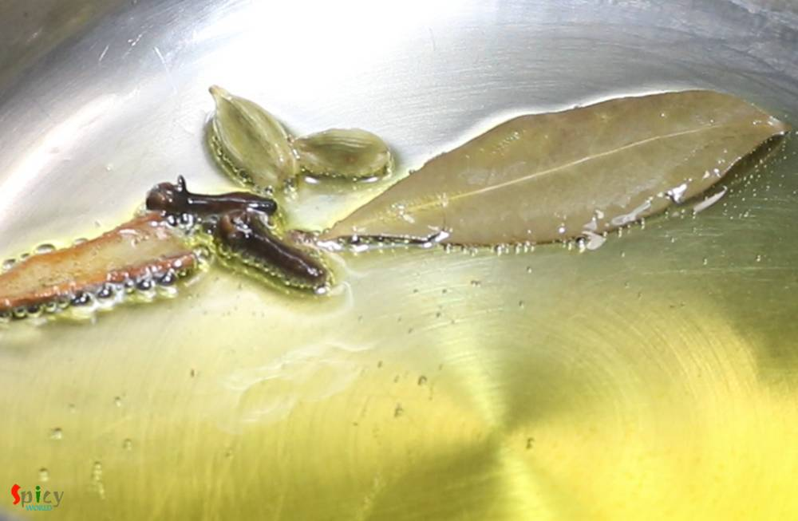
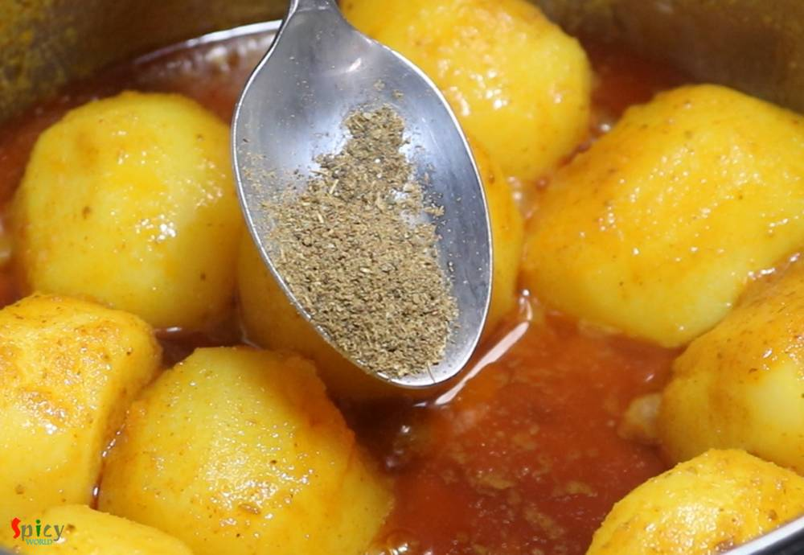

Simple and Easy Recipes
Niramish aloor dom / Dum Aloo without Onion & Garlic
© 2016 Spicy World, Published on: Feb 10, 2019
Niramish means without onion and garlic. Usually when we offer a meal to god / goddess with our respect and devotion, we call it 'Bhog' / 'prasad' . In any prasad, this Aloor Dom is a must with khichdi and chutney. This recipe is without onion and garlic, that's why I mentioned 'niramish'. During monsoon you can also enjoy this with khichuri, beguni and chutney or in weekend breakfast make some luchi / lachha paratha with this curry. Whenever you arrange your next puja in your home, don't forget to put this item in the menu. I have already posted some other 'dum aloo' recipe. Try this in your kitchen and you will love it.

Ingredients
- 15-20 small whole potatoes, peeled and washed.
- 2 small tomatoes, roughly chopped.
- 2 inches ginger, chopped.
- 2-3 green chilies, chopped.
- 9-10 peanuts or 6-7 cashews soaked in water.
- Spice powder 1 Teaspoon of each (turmeric powder, red chili powder, roasted cumin and coriander powder, kashmiri chili powder).
- Whole spices (2 green cardamom, 1 very small cinnamon stick, 2 cloves and 1 bay leaf).
- Salt and sugar as per your taste.
- 4-5 Tablespoons of mustard oil.
- Pinch of garam masala powder.


Steps
Make a smooth paste out of chopped tomatoes, ginger, green chilies and peanuts soaked in water.
Soak peanuts or cashews for 30 minutes then put the nuts with all other ingredients in a blender.
In a small bowl, add all of the spice powder and 2-3 Tablespoons of water. Mix well and keep aside.
Heat mustard oil in a pan. Saute the whole spices for few seconds.
Then add the spice powder paste and cook on medium flame for 2-3 minutes.
Then add the tomato and nut paste. Mix well and cook until the oil separates. Do not cook in hurry otherwise raw nutty flavor will remain in the curry.
Add the peeled potatoes, mix well for 3-4 minutes. Do not add boiled potatoes.
Add some salt and 1-2 Teaspoons of sugar. Mix well. Adjust the seasoning as per your taste.
Then add 1-2 cups of water, mix well, cover and cook until the potatoes become soft.
If the gravy becomes dry, add little more water.
Lastly add garam masala powder, mix well and turn off the heat. You can add little ghee if you want.
Your Niramish Aloor Dom is ready to serve.
Serve this hot with luchi, lachha paratha or khichuri ...
")